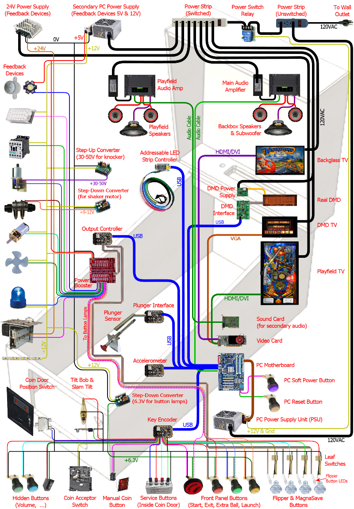

Ball balancing <<
Previous Next >> 機電系統設計與模擬
Virtual pinball
Project background:
http://mjrnet.org/pinscape/
https://www.youtube.com/results?search_query=virtual+pinball

(above image file source)
Virtual Pinball Machine
https://youtu.be/ZJQV2FlGFBo (Arduino + compass+ PSD sensor +V-REP simulation)
http://mjrnet.org/pinscape/BuildGuideV2
實習專案三: 虛實整合彈珠檯設計與模擬：
設計一套可讓使用者利用瀏覽器操控的虛實整合彈珠檯系統.
實習內容: 零組件設計繪圖、感測器配置、影像辨識與合成系統設計、機構與電路系統設計、PID 控制系統設計 (自動控制、控制系統設計).
使用工具: 自選 MCAD 套件、CoppeliaSim 4.5.1 rev4、PICSimLab、Arduino board、Potentiometers、Stepping motors、Servo motors、OpenCV、Webcam、Python zmq Remote API.
交付內容: Github Pages 設計歷程、MCAD 零組件檔案、CoppeliaSim 場景、Webcam 與 Arduino 整合電路設計、Python 控制與影像辨識程式、pdf 格式專案報告、Reveal.js 簡報.
References:
https://toytheater.com/space-pinball/
https://www.researchgate.net/publicatio/228986671_Implementing_games_on_pinball_machines
https://www.eckerd.edu/news/blog/stem-course-engineers-pinball/
https://commons.princeton.edu/motorcycledesign/joseph-henry-project/pinball-restoration/brief-history-of-pinball/
https://wikis.utexas.edu/display/RMD/Pinball+Machine
Toward a study of pinball
Arcade-Style Game Design – Pinball’s Connections to Coin-Op Videogames
Pinball is of the body: Why modern tech can't recreate the world under glass
https://youtu.be/mcLs7kBEwfI
https://www.ipdb.org/search.pl (Internet pinball database)
pinball patents
https://youtu.be/R0DXlcbVsWg (5 reasons why virtual pinball is better than the real thing)
https://pinballcastle.com/virtual-pinball-vs-real-machines/
http://mjrnet.org/pinscape/BuildGuideV2/BuildGuide.php
http://mjrnet.org/pinscape/
https://github.com/mjrgh/PinballY/
https://en.wikipedia.org/wiki/Visual_Pinball
https://youtu.be/9Z6P6p2mRIA (How To Make Your Own Pinball Machine In Visual Pinball - Crash Course)
https://youtu.be/NZKRtjsFJWI
https://www.vpforums.org/
https://futurepinball.com/
https://youtu.be/F_yxEexFBl4
http://www.performancepinball.com/rebuilding-pop-bumpers.html
Programming Pinball Machines for Fun and Education
https://www.funwithpinball.com/
https://mercimichel.medium.com/ouigo-lets-play-case-study-b763f69dd89c
Implementing games on pinball machines
https://www.instructables.com/Arduino-Pinball-Machine-That-Plays-Itself/
https://betterprogramming.pub/using-ai-to-automate-a-pinball-machine-ef5721141f03
https://www.uc.edu/news/articles/n20938843/electrical-engineering-professor-uses-pinball-machines-as-a-teaching-tool.html
https://www.uc.edu/campus-life/honors/students/experiences/seminars/seminar-spotlights/eece2001c.html
Pinball machine design leverages tools from electrical engineering, computer science, and industrial design to create an immersive world under glass. Each discipline contributes an additional dimension to the experience, and the fusion of all these elements together creates a unique media for storytelling that sits at the crossroads of video games, robotics and kinetic art. This course explores the underlying engineering and design concepts that go into a complete pinball machine and how they work together to build a theme and tell a story. Each lesson of the course and corresponding lab will address a practical electrical circuit design, physical design, prototyping, or programming concept as it related to an element of the pinball playfield. Each of these topics will be taught at an accessible level for students outside of the engineering and design programs. Over the course of the semester, the students will add components to the machine while also writing the corresponding computer code. At the end of the semester, each team of students will have created a complete pinball machine.
https://youtu.be/dy7oVSNtaRk
https://hades.mech.northwestern.edu/index.php/Baseball
https://www.pinballshop.nl/electronics-parts/
https://www.kineticist.co/post/who-makes-pinball-machines
virtual pinball machine (future pinball, guide)
pinball machine dimensions
pinball manual.pdf
AC/DC manual.pdf (pro, various manual)
27mm steel ball (80g)
pushbutton
coils and windings
electrical and electronics
lamps and leds
pinscores
playfield machinery
https://projecthub.arduino.cc/grahamasker/build-a-pinball-machine-720f06
https://pinballdesign.com/
https://calibre-ebook.com/download_portable
https://altair.com/newsroom/articles/Anyone-Can-Become-a-Pinball-Wizard-with-Model-based-Development
https://www.solidsolutions.co.uk/blog/2016/03/pinball-machine-using-event-based-motion/
https://youtu.be/sUSQb0Bh_M4
https://youtu.be/NWry1RlA08c
如何計算轉動慣性矩 (資料來源)
Ball balancing <<
Previous Next >> 機電系統設計與模擬